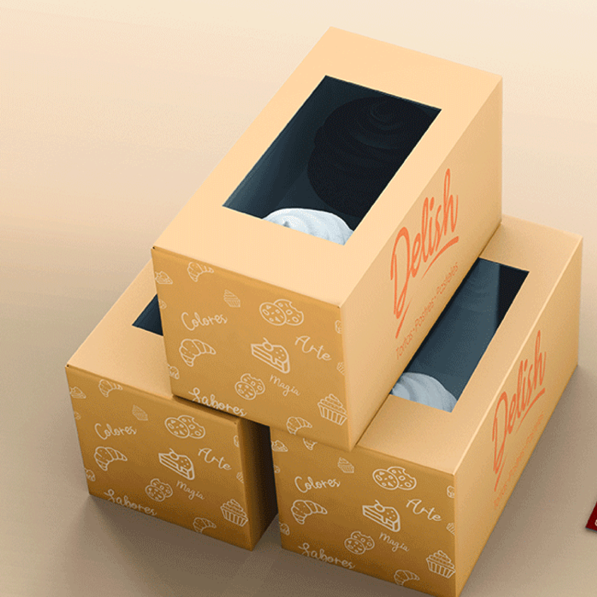
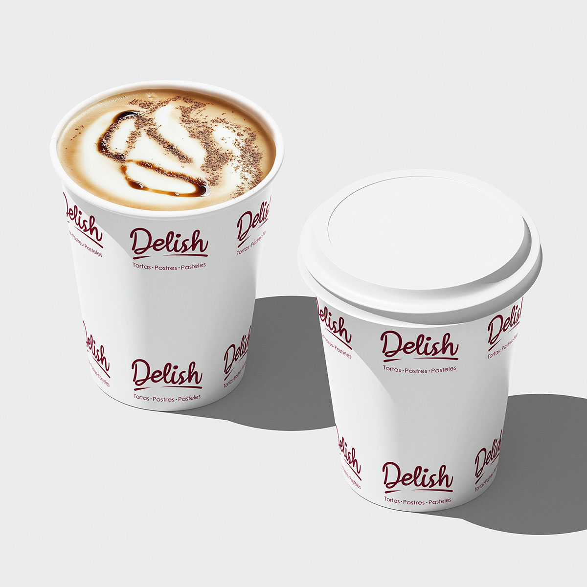
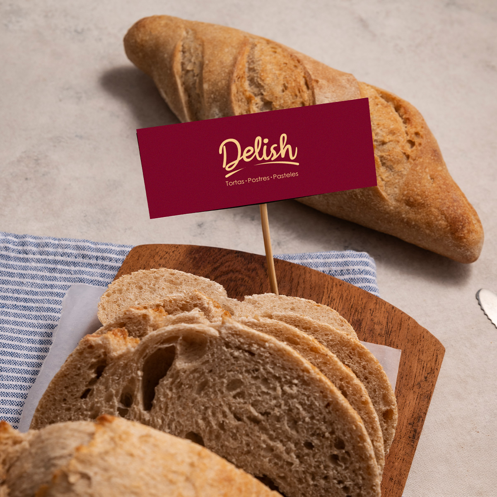
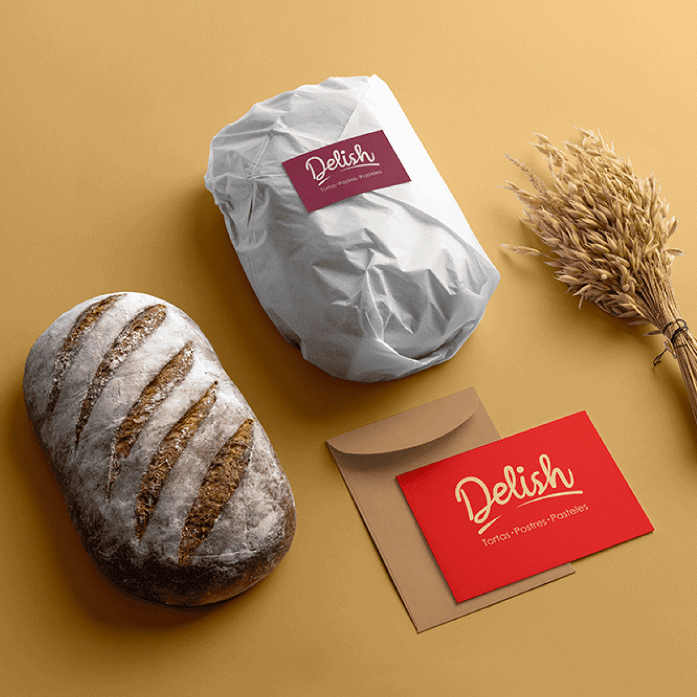

Diseño de identidad visual y manual de marca
Diseño del logotipo y manual de marca para la pastelería Delish, una empresa familiar dedicada a la elaboración de tortas y postres con recetas tradicionales.
La identidad visual busca transmitir una sensación artesanal y dulce mediante formas orgánicas y una tipografía cursiva que refuerza el carácter familiar de la marca.
Se logró construir una identidad visual coherente que representa los valores de tradición, cercanía y calidad de la pastelería.



